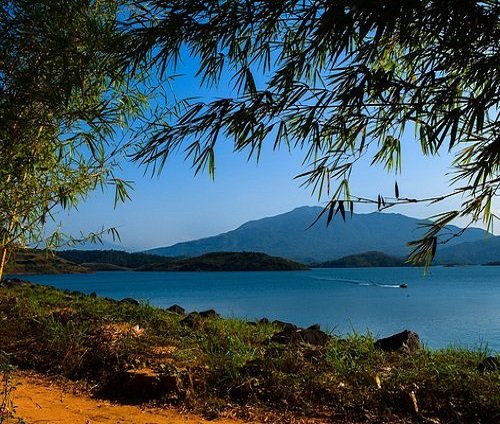

TOP ATTRACTIONS IN WAYANAD
CHEMBRA PEAK

Chembra is the highest peak in Wayanad district and lives up to its billing of being a picturesque location. It has managed to maintain its pristine nature over the years. Situated 2,100 m above sea level, this peak offers a breath-taking view of rare flora and fauna. One can come across many exotic species in these parts. The route to the peak itself has a brilliant view along with a heart-shaped lake, waterfalls and lush greenery the whole way. It is a prime spot for trekking but prior permission needs to be taken before going on these treks. Guided tours are available and can help in enhancing the entire experience.
BANASURA HILL
Banasura Hill is one of the tallest mountains in the Western Ghats of the Wayanad district, Kerala, India. The hill is named after Banasura, a mythical character of Indian legends. It is one of the highest peak exceeding 2,000m between Nilgiris and Himalayas after Chembra Peak.Banasura Hill has an altitude of 2,073 metres (6,801 ft) and is a part of the Western Ghats. It is the northernmost peak higher than 2,000 metres (6,562 ft) south of the Gangetic plains in India. It lies off the state highway from Kuttiady to Mananthavady.
WILDLIFE SANCTUARY

The Wayanad Wildlife Sanctuary is an animal sanctuary in Wayanad, Kerala, India. It has an extent of 344.44 km² with four ranges namely Sulthan Bathery, Muthanga, Kurichiat and Tholpetty. A variety of large wild animals such as Indian bison, elephant, deer and tiger are found there.There are also quite a few unusual birds in the sanctuary. In particular, peafowl tend to be very common in the area. Wayanad Wildlife Sanctuary is the second largest wildlife sanctuary in Kerala. It is bestowed with lush green forests and rich wildlife.